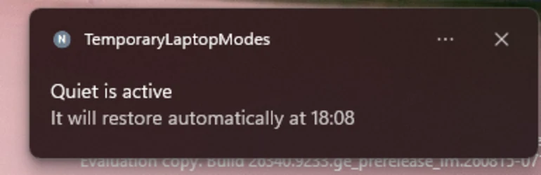
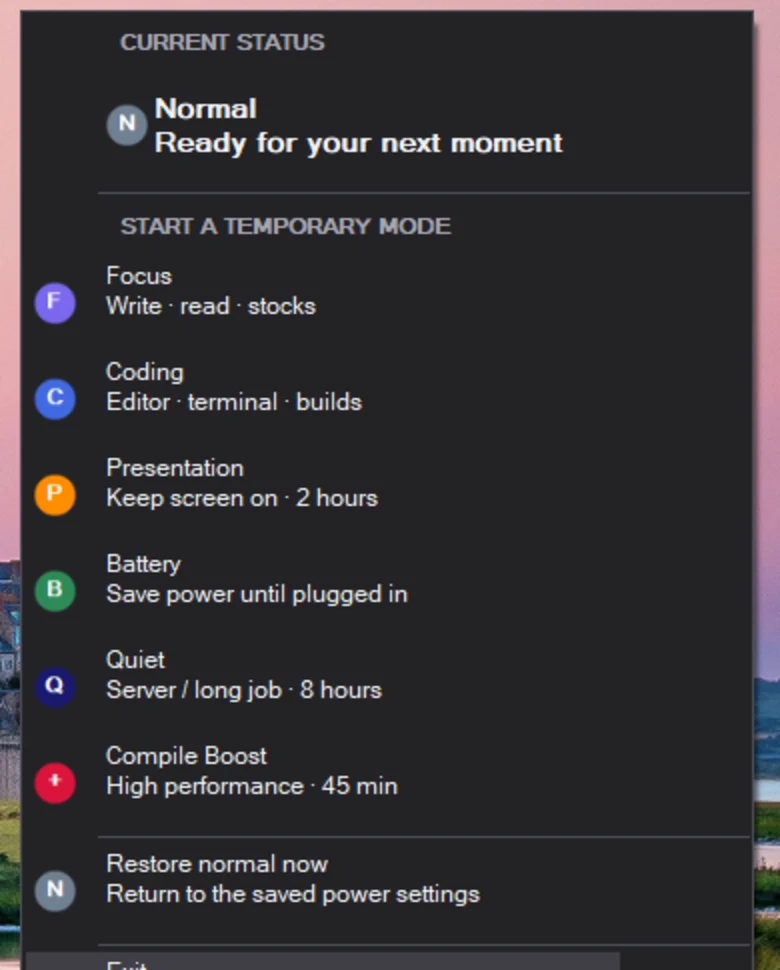

F
Focus
Write, read, watch stocks, or leave a dashboard open.
Choose a temporary laptop mode for work, travel, teaching, or a quiet overnight task. Your previous Windows power settings are restored automatically when you are done.
Microsoft Store release is currently in certification. The Store link will become available once it is published.
No hunting through Windows settings and no need to remember how to undo a change. The tray menu makes the active status, each mode, and the return to normal clear at a glance.


Pick from the system tray. The app remembers the current power settings first, then restores them when the temporary mode ends, when power is connected in Battery mode, or when you choose Restore normal.
Write, read, watch stocks, or leave a dashboard open.
Editors, terminals, and moderate development work.
Keep the screen awake for class, meetings, and screen sharing.
Save power until the laptop is plugged in.
Keep a server, download, or long job awake with restrained power use.
Short burst of high performance for demanding builds and tests.
No account, analytics, cloud sync, advertising, or network service. The app changes local Windows power settings only after you choose a mode.
The repository also includes SetPowerMode.ps1, a PowerShell command-line companion with the same human-centered modes.